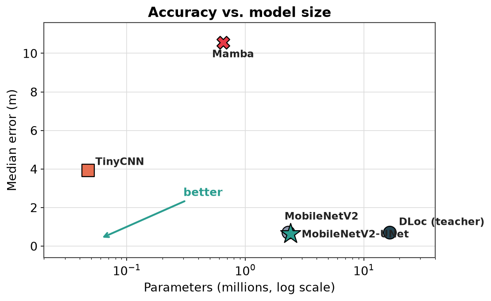
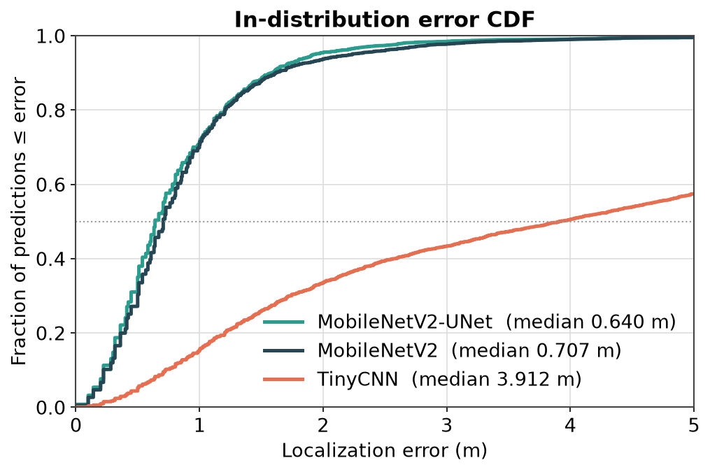
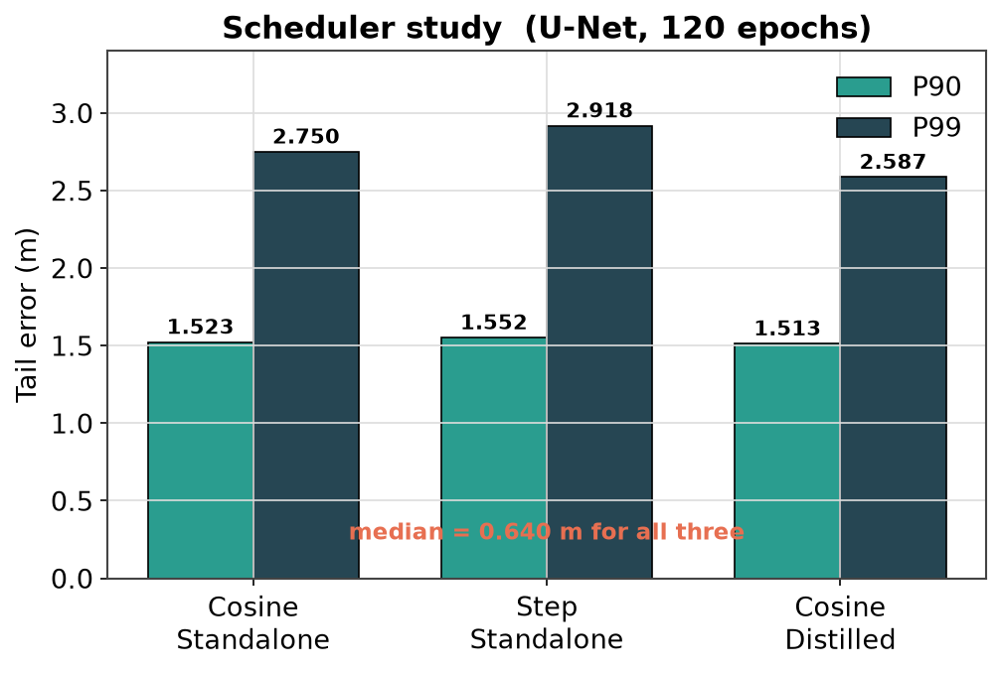
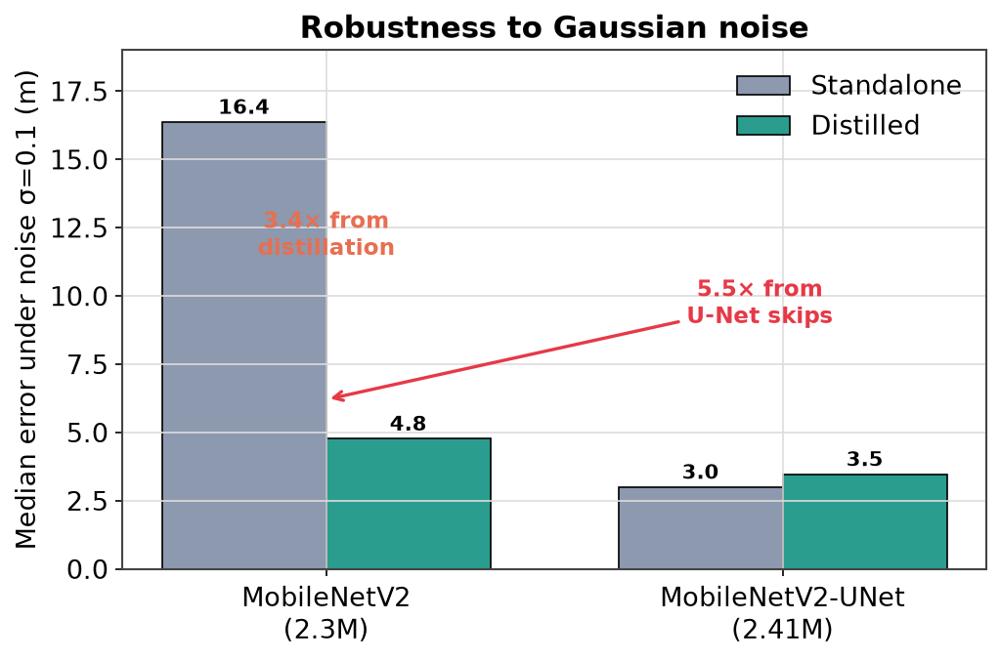
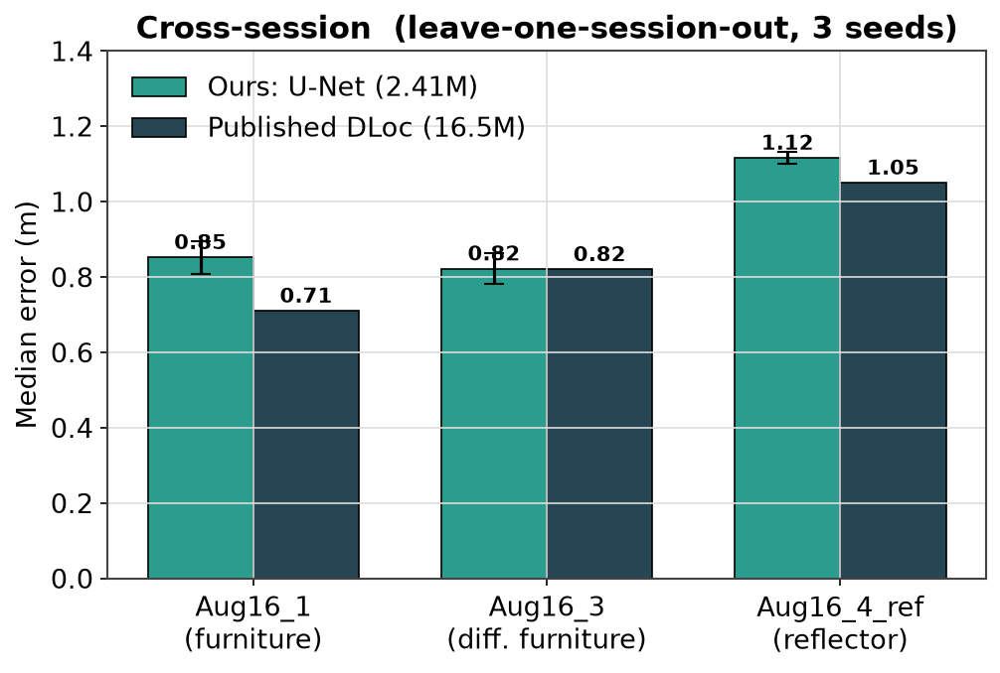
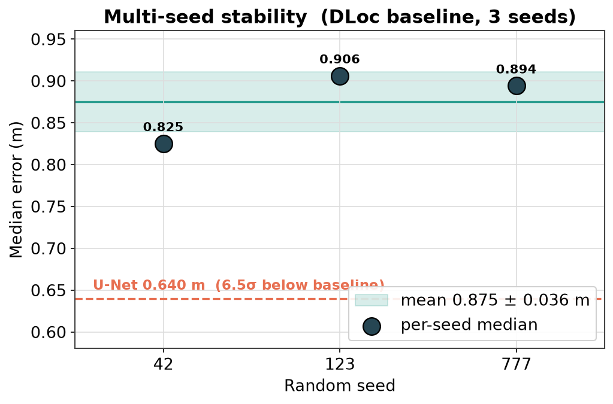
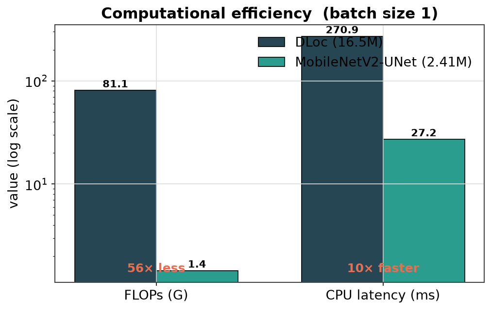
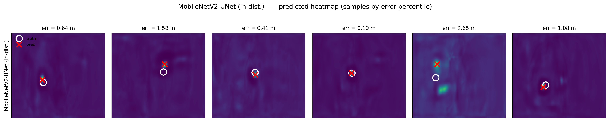
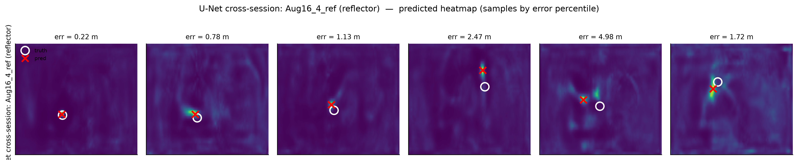

Knowing where people and things are indoors powers hospitals, warehouses, robots, and AR — everywhere GPS fails. WiFi is already all around us, and it can do the job.
The most accurate WiFi localizers are large and computationally heavy — too heavy to run on the small everyday devices where localization is actually needed.
Build much smaller models and train them to imitate the large, accurate one — keeping the accuracy while shedding the weight.
Turn each AP's CSI into a 2-D heatmap over the floor, then learn to translate the 4-channel image into one clean location heatmap. The brightest pixel is the answer.
Grid resolution 0.1 m/pixel · target is a Gaussian bump at the true location.
A selective state-space model. It reads the channel data as a 1-D sequence and scans along it — there is no 2-D spatial grid.
Sequence models are very efficient. The question: can a model that never "sees" the floor as an image still localise? It is our smallest student.
Just three convolutional layers and two fully-connected layers — the simplest network that maps the 4-channel input to a location.
A deliberate floor probe: how small can the network get before it stops working? It has by far the lowest capacity.
Depthwise-separable convolutions and inverted residual blocks form a compact encoder; a decoder expands the bottleneck back into a heatmap.
No skip connections — every bit of spatial detail must squeeze through the narrow bottleneck. The next model fixes exactly this.
The same efficient encoder, plus U-Net skip connections (dashed) that carry high-resolution detail straight to the decoder, bypassing the bottleneck.
In localisation, the spatial detail is the answer — the skips preserve exactly what the bottleneck would throw away. This is our main model.
The harder 4-AP Jacobs Hall (1500 sq ft). AP 4 is hidden behind a wall (strong NLOS) and a wall of plasma screens behind AP 3 creates rich multipath.
| # | Session | Condition | Samples | Role |
|---|---|---|---|---|
| 1 | jacobs_Jul28 | standard, no furniture | 17,574 train | train |
| 2 | jacobs_Jul28_2 | same setup, ~1 h later | 4,260 test | in-distribution test |
| 3 | jacobs_Aug16_1 | random furniture added | 11,201 | cross-session |
| 4 | jacobs_Aug16_3 | different furniture | 8,754 | cross-session |
| 5 | jacobs_Aug16_4_ref | + aluminium reflector | 5,486 | cross-session (hardest) |
| Experiment | Training data | Tested on | Why this split |
|---|---|---|---|
| In-distribution | Sess 1 + 2-train (17,574) | Sess 2 held-out (4,260) | accuracy, scheduler, multi-seed |
| Robustness | same as above | Sess 2, corrupted at test | deployed robustness — no retraining |
| Cross-session (LOSO) | 3 setups (leave one Aug out) | held-out Aug session | matches the DLoc paper — fair comparison |
| Zero-shot | 2 July sessions only | Aug 3–5 | internal ablation under a harder shift |

| Model | Params | Median | Note |
|---|---|---|---|
| DLoc | 16.5M | 0.707 | teacher |
| MobileNetV2 | 2.3M | 0.707 | lossless |
| TinyCNN | 47K | 3.922 | floor |
| MobileNetV2-UNet | 2.41M | 0.640 | best |
| Mamba | 0.65M | 10.56 | mismatch |
| Model | Params | Mode | Median | P90 | P99 |
|---|---|---|---|---|---|
| DLoc baseline | 16.5M | — | 0.707 | ~1.6 | ~4.0 |
| MobileNetV2 | 2.3M | Standalone | 0.707 | 1.616 | 3.992 |
| MobileNetV2 | 2.3M | Distilled | 0.707 | 1.612 | 4.003 |
| TinyCNN | 47K | Standalone | 3.922 | 13.919 | 23.244 |
| TinyCNN | 47K | Distilled | 3.706 | 14.784 | 25.101 |
| MobileNetV2-UNet | 2.41M | Standalone | 0.640 | 1.523 | 2.750 |
| MobileNetV2-UNet | 2.41M | Distilled | 0.640 | 1.513 | 2.587 |
Session 2 held-out test, N = 4,260. Median / P90 / P99 in metres.


| Scheduler | Mode | Median | P90 | P99 |
|---|---|---|---|---|
| Cosine | Standalone | 0.640 | 1.523 | 2.750 |
| Step | Standalone | 0.640 | 1.552 | 2.918 |
| Cosine | Distilled | 0.640 | 1.513 | 2.587 |

| Condition | MNv2 st. | MNv2 di. | U-Net st. | U-Net di. |
|---|---|---|---|---|
| Normal | 0.707 | 0.707 | 0.640 | 0.640 |
| Noise σ=0.1 | 16.368 | 4.769 | 3.000 | 3.469 |
| Noise σ=0.2 | 16.307 | 5.369 | 5.741 | 5.320 |
| Random 2-AP dropout | 2.402 | 2.516 | 3.324 | 2.730 |
| Attenuation 0.5× | 1.342 | 1.500 | 1.077 | 1.105 |
| Blur k=5 | 0.849 | 0.854 | 0.671 | 0.656 |
Median error (m). st.=standalone, di.=distilled. Distillation wins noise (MNv2) & dropout (U-Net); skips win noise overall.

| Fold | Ours (m) | DLoc |
|---|---|---|
| Aug16_1 (furniture) | 0.852 ± .044 | 0.71 |
| Aug16_3 (diff. furn.) | 0.822 ± .040 | 0.82 |
| Aug16_4_ref (reflector) | 1.116 ± .016 | 1.05 |
| Mean | 0.930 | 0.86 |

| Seed | Median | P90 | P99 |
|---|---|---|---|
| 42 | 0.825 | 2.402 | 22.672 |
| 123 | 0.906 | 2.335 | 7.714 |
| 777 | 0.894 | 2.102 | 8.694 |
| Mean ± Std | 0.875 ± .036 | 2.280 ± .128 | 13.03 ± 6.83 |

| Model | Params | FLOPs | CPU | GPU |
|---|---|---|---|---|
| DLoc | 16.5M | 81.06G | 270.9 | 16.2 |
| MobileNetV2 | 2.27M | 1.28G | 17.9 | 6.3 |
| TinyCNN | 47K | 0.66G | 9.1 | 1.5 |
| MobileNetV2-UNet | 2.41M | 1.45G | 27.2 | 4.5 |
ms latency (batch 1). U-Net: 56× fewer FLOPs, 10× less CPU latency than DLoc.

